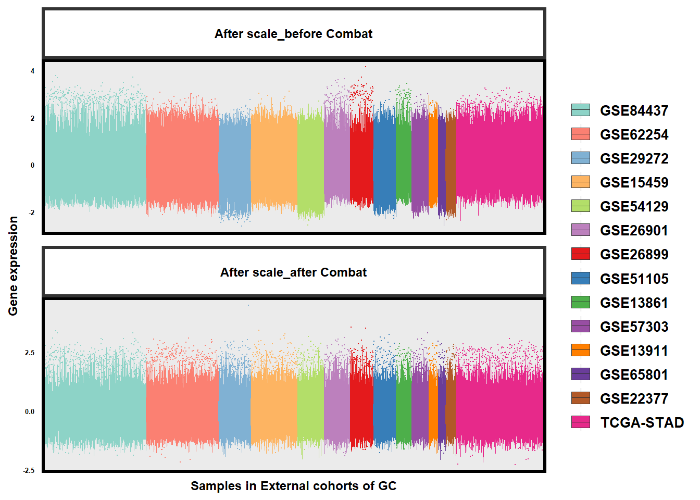
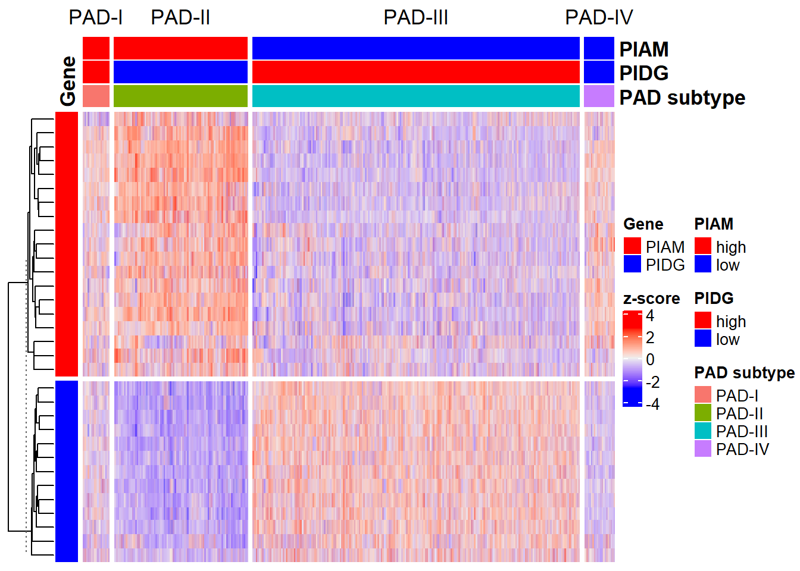
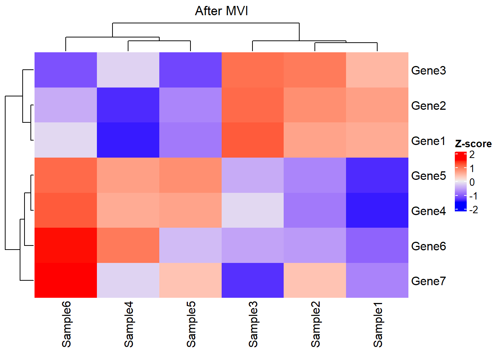

Chapter 2 Discussion
In this section, we would discuss some key topics about GSClassifier, including Missing value imputation (MVI), Batch effect, hyperparameters, and so on.
2.1 Packages
# Install "devtools" package
if (!requireNamespace("devtools", quietly = TRUE))
install.packages("devtools")
# Install dependencies
if (!requireNamespace("luckyBase", quietly = TRUE))
devtools::install_github("huangwb8/luckyBase")
# Install the "**GSClassifier**" package
if (!requireNamespace("GSClassifier", quietly = TRUE))
devtools::install_github("huangwb8/GSClassifier")
#
# Install the "pacman" package
if (!requireNamespace("pacman", quietly = TRUE)){
install.packages("pacman")
library(pacman)
} else {
library(pacman)
}
# Load needed packages
packages_needed <- c(
"readxl",
"ComplexHeatmap",
"GSClassifier",
"rpart",
"tidyr",
"reshape2",
"ggplot2")
for(i in packages_needed){p_load(char=i)}Here is the environment of R programming:
# R version 4.3.1 (2023-06-16 ucrt)
# Platform: x86_64-w64-mingw32/x64 (64-bit)
# Running under: Windows 11 x64 (build 26100)
#
# Matrix products: default
#
#
# locale:
# [1] LC_COLLATE=Chinese (Simplified)_China.utf8
# [2] LC_CTYPE=Chinese (Simplified)_China.utf8
# [3] LC_MONETARY=Chinese (Simplified)_China.utf8
# [4] LC_NUMERIC=C
# [5] LC_TIME=Chinese (Simplified)_China.utf8
#
# time zone: Asia/Shanghai
# tzcode source: internal
#
# attached base packages:
# [1] grid stats graphics grDevices utils datasets methods
# [8] base
#
# other attached packages:
# [1] ggplot2_3.5.0 reshape2_1.4.4 tidyr_1.3.1
# [4] rpart_4.1.19 GSClassifier_0.4.0 xgboost_2.0.3.1
# [7] luckyBase_0.2.0 ComplexHeatmap_2.18.0 readxl_1.4.3
# [10] pacman_0.5.1
#
# loaded via a namespace (and not attached):
# [1] splines_4.3.1 later_1.3.2 bitops_1.0-7
# [4] cellranger_1.1.0 tibble_3.2.1 hardhat_1.3.1
# [7] preprocessCore_1.64.0 pROC_1.18.5 lifecycle_1.0.4
# [10] rstatix_0.7.2 fastcluster_1.2.6 doParallel_1.0.17
# [13] globals_0.16.3 lattice_0.21-8 MASS_7.3-60
# [16] backports_1.4.1 magrittr_2.0.3 Hmisc_5.1-2
# [19] sass_0.4.8 rmarkdown_2.26 jquerylib_0.1.4
# [22] yaml_2.3.8 remotes_2.4.2.1 httpuv_1.6.14
# [25] sessioninfo_1.2.2 pkgbuild_1.4.3 DBI_1.2.2
# [28] RColorBrewer_1.1-3 lubridate_1.9.3 abind_1.4-5
# [31] pkgload_1.3.4 zlibbioc_1.48.0 purrr_1.0.2
# [34] BiocGenerics_0.48.1 RCurl_1.98-1.16 nnet_7.3-19
# [37] ipred_0.9-14 circlize_0.4.16 lava_1.8.0
# [40] GenomeInfoDbData_1.2.11 IRanges_2.36.0 S4Vectors_0.40.2
# [43] listenv_0.9.1 parallelly_1.37.1 codetools_0.2-19
# [46] tidyselect_1.2.1 shape_1.4.6.1 matrixStats_1.2.0
# [49] stats4_4.3.1 dynamicTreeCut_1.63-1 base64enc_0.1-3
# [52] jsonlite_1.8.8 caret_6.0-94 GetoptLong_1.0.5
# [55] ellipsis_0.3.2 Formula_1.2-5 survival_3.5-5
# [58] iterators_1.0.14 signal_1.8-0 foreach_1.5.2
# [61] tools_4.3.1 Rcpp_1.0.12 glue_1.7.0
# [64] prodlim_2023.08.28 gridExtra_2.3 xfun_0.52
# [67] usethis_2.2.3 GenomeInfoDb_1.38.7 dplyr_1.1.4
# [70] withr_3.0.0 fastmap_1.1.1 fansi_1.0.6
# [73] digest_0.6.34 timechange_0.3.0 R6_2.5.1
# [76] mime_0.12 colorspace_2.1-0 GO.db_3.18.0
# [79] RSQLite_2.3.5 utf8_1.2.4 generics_0.1.3
# [82] tuneR_1.4.6 data.table_1.15.2 recipes_1.0.10
# [85] class_7.3-22 httr_1.4.7 htmlwidgets_1.6.4
# [88] ModelMetrics_1.2.2.2 pkgconfig_2.0.3 gtable_0.3.4
# [91] timeDate_4032.109 blob_1.2.4 impute_1.76.0
# [94] XVector_0.42.0 htmltools_0.5.7 carData_3.0-5
# [97] profvis_0.3.8 bookdown_0.43 clue_0.3-65
# [100] scales_1.3.0 Biobase_2.62.0 png_0.1-8
# [103] gower_1.0.1 knitr_1.50 rstudioapi_0.15.0
# [106] rjson_0.2.21 checkmate_2.3.1 nlme_3.1-162
# [109] cachem_1.0.8 GlobalOptions_0.1.2 stringr_1.5.1
# [112] parallel_4.3.1 miniUI_0.1.1.1 foreign_0.8-84
# [115] AnnotationDbi_1.64.1 pillar_1.9.0 vctrs_0.6.5
# [118] urlchecker_1.0.1 promises_1.2.1 randomForest_4.7-1.1
# [121] ggpubr_0.6.0 car_3.1-2 xtable_1.8-4
# [124] cluster_2.1.4 htmlTable_2.4.2 evaluate_0.23
# [127] cli_3.6.2 compiler_4.3.1 rlang_1.1.3
# [130] crayon_1.5.2 future.apply_1.11.1 ggsignif_0.6.4
# [133] plyr_1.8.9 fs_1.6.3 stringi_1.8.3
# [136] WGCNA_1.72-5 munsell_0.5.0 Biostrings_2.70.2
# [139] devtools_2.4.5 Matrix_1.6-5 bit64_4.0.5
# [142] future_1.33.1 KEGGREST_1.42.0 shiny_1.8.0
# [145] broom_1.0.5 memoise_2.0.1 bslib_0.6.1
# [148] bit_4.0.52.2 Subtype Vector
In the PAD project, the Subtype Vector were identified based on independent cohorts under unsupervised hierarchical clustering, instead of an merged expression matrix after batch-effect control of the sva::ComBat function.
Here were some considerations:
- Batch control would damage the raw rank differences
Here we just showed how could this happen.
# Data
testData <- readRDS(
system.file("extdata",
"testData.rds",
package = "GSClassifier")
)
expr_pad <- testData$PanSTAD_expr_part
# Missing value imputation
expr_pad <- na_fill(expr_pad,
method = 'quantile',
seed = 698,
verbose = F)
# PADi
padi <- readRDS(system.file("extdata", "PAD.train_20220916.rds", package = "GSClassifier")) The raw rank differences were as follows:
# Time-consuming
rank_pad <- GSClassifier:::trainDataProc_X(
expr_pad,
geneSet = padi$geneSet,
breakVec=c(0, 0.25, 0.5, 0.75, 1.0)
)
print(rank_pad$dat$Xbin[1:5,1:5])
# ENSG00000122122 ENSG00000117091 ENSG00000163219 ENSG00000136167
# GSM2235556 3 2 1 4
# GSM2235557 3 3 1 4
# GSM2235558 3 2 1 4
# GSM2235559 3 4 1 4
# GSM2235560 3 3 1 4
# ENSG00000005844
# GSM2235556 3
# GSM2235557 2
# GSM2235558 3
# GSM2235559 3
# GSM2235560 3Here, the expression matrix after removing batch effect were calculated:
# Cleaned and normalized data for sva::Combat
expr_pad2 <- apply(expr_pad, 2, scale)
rownames(expr_pad2) <- rownames(expr_pad)Remove batch effects:
# BatchQC data
library(sva)
# Loading required package: mgcv
# Loading required package: nlme
# This is mgcv 1.8-42. For overview type 'help("mgcv-package")'.
# Loading required package: genefilter
#
# Attaching package: 'genefilter'
# The following object is masked from 'package:ComplexHeatmap':
#
# dist2
# Loading required package: BiocParallel
batch <- testData$PanSTAD_phenotype_part$Dataset
expr_pad2_rmbat <- ComBat(
dat=expr_pad2,
batch=batch,
mod=NULL)
# Found14batches
# Adjusting for0covariate(s) or covariate level(s)
# Standardizing Data across genes
# Fitting L/S model and finding priors
# Finding parametric adjustments
# Adjusting the DataLook at the alteration of batch effects in GC datasets:
# Compare
df1 <- reshape2::melt(expr_pad2)
df2 <- reshape2::melt(expr_pad2_rmbat)
df3 <- rbind(
cbind(df1, type = 'After scale_before Combat'),
cbind(df2, type = 'After scale_after Combat')
)
df3$type <- factor(df3$type, levels = c('After scale_before Combat', 'After scale_after Combat'))
df3$dataset <- convert(df3$Var2,'ID','Dataset', testData$PanSTAD_phenotype_part)
dataset <- unique(df3$dataset)
dataset_color <- mycolor[c(1,4,5,6,7,10,21,22,23,24,25,54,56,60)]
# ggplot: Combat似乎有一点点效果
if(T){
size=6
p <- ggplot(df3,aes(x=Var2,y=value,fill=dataset,color=dataset)) +
geom_boxplot(outlier.size = -0.3, size = 0.02) +
scale_fill_manual(
breaks = dataset,
values = dataset_color,
labels = dataset
) +
scale_color_manual(
breaks = dataset,
values = dataset_color,
labels = dataset
) +
guides(color = "none",
fill = guide_legend(override.aes = list(size=1))) +
facet_wrap(. ~ type,
nrow = length(unique(df3$type)),
scales = 'free') +
labs(x = 'Samples in External cohorts of GC',
y = 'Gene expression',
fill = NULL) +
# coord_flip() +
theme_bw() +
theme(
axis.text.x = element_blank(),
axis.text.y = element_text(size = size/15*12,colour = "black",face = "bold"),
axis.title.x = element_text(size = size*1.5,colour = "black",face = "bold"),
axis.title.y = element_text(size = size*1.5,colour = "black",face = "bold"),
legend.text = element_text(size = size/15*25,colour = "black",face = "bold"),
legend.title = element_text(size = size/15*25,colour = "black",face = "bold"),
legend.position='right',
strip.background = element_rect(fill="white",size = 2),
strip.text.x = element_text(size = size*1.5,colour = "black",face = "bold", margin = margin(t = 0.5, r = 0, b = 0.5, l = 0, unit = "cm")),
panel.border = element_rect(colour = "black",size=2),
# panel.grid = element_blank(),
# panel.border=element_rect(fill='transparent',color='transparent'),
# axis.ticks = element_line(colour = "black",size = 2.5,linetype = 1,lineend = 'square'),
axis.ticks = element_blank()
# axis.line = element_line(colour = "black",size = 2.5,linetype = 1,lineend = 'square')
)
print(p)
}
The rank differences after batch-effect control were as follows:
# Time-consuming
rank_pad_rmbat <- GSClassifier:::trainDataProc_X(
expr_pad2_rmbat,
geneSet = padi$geneSet,
breakVec=c(0, 0.25, 0.5, 0.75, 1.0)
)The comparison demonstrated that the adjustment for batch effects would change the rank differences:
The rank differences, the base of TSP normalization, were critical for model training and subtype identification, so it’s not recommended to adjust for batch effects using sva::ComBat before model training in GSClassifier.
- Batch control would lead to an unbalanced subtype vectors.
Here, a heatmap were used to show the self-clustering of the training cohort based on PIAM and PIDG:
res <- PAD(
expr = expr_pad2_rmbat,
cluster.method = "ward.D2",
subtype = "PAD.train_20220916",
verbose = T
)
Look at the percentage of PAD subtypes:
table(res$Data$`PAD subtype`)/ncol(expr_pad2_rmbat)
#
# PAD-I PAD-II PAD-III PAD-IV
# 0.05169938 0.25801819 0.63140258 0.05887985This results demonstrated the unbalanced self-clustering of PAD subtypes based on the expression matrix after sva::ComBat, which would damage the performance of trained models.
2.3 Missing value imputation (MVI)
Due to reasons like weak signal, contamination of microarray surfaces, inappropriate manual operations, insufficient resolution, or systematic errors during the laboratory process [8–10], missing value in high-input genetic data is common. Generally, tiny missing values could be just dealt with case deletion, while the biological discovery might be damaged when the missing rate tops 15% [11,12]. Currently, lots of methods, including statistic-based or machine learning-based methods (Figure 2.1), had been developed for missing value imputation (MVI) [12]. Wang et al [13] categorized MVI methods into simple (zeros or average), biology knowledge-, global learning-, local learning-, and hybrid-based methods. In order to satisfy the working conditions of xgboost [14] functions (xgb.train, xgboost, and xgb.cv) in GSClassifer, missing values in the expression matrix must be deleted or imputation.
Figure 2.1: Missing value imputation methods reviewed by Hasan et al.
In PAD project, several strategies were applied to reduce the impact of missing values as possible. First, both PIAM and PIDG in PAD project were curated GEPs that were not missing in over 80% of gastric cancer datasets. Here we showed the actual distribution of missing values across samples in gastric cancer datasets we used.
# Data
testData <- readRDS(
system.file("extdata",
"testData.rds",
package = "GSClassifier")
)
expr_pad <- testData$PanSTAD_expr_part
# Missing value
expr_pad_na <- apply(expr_pad, 2,
function(x) sum(is.na(x))/length(x))
expr_pad_na_df <- data.frame(
sample = names(expr_pad_na),
prob = as.numeric(expr_pad_na),
stringsAsFactors = F
)As shown in Figure 2.2, the percentage of all samples in gastric cancer datasets we used is lower than 8%.
# ggplot
p1 <- ggplot(data = expr_pad_na_df,
aes(x = sample, y = prob)) +
geom_bar(stat = 'identity', color = mycolor[3]) +
scale_y_continuous(labels=scales::percent) +
labs(x = 'Samples in gastric cancer cohorts',
y = 'Percentage of missing value') +
theme_bw() +
theme(
axis.text.x = element_blank(),
axis.ticks = element_blank(),
axis.title = element_text(size = 15),
axis.text = element_text(size = 12)
)
print(p1)Figure 2.2: The distribution of missing value across gastric cancer samples.
Second, we did conduct some MVI strategies to deal with data before model training in GSClassifier. Due to the low missing rate of our experimental data, we just set missing values as zero during model training and subtype identification in the early version of PADi (PAD.train.v20200110). The model seemed to be robust in both the internal cohort and external cohorts, and greatly predicted the response to immune checkpoint inhibitors (ICIs) in advanced gastric cancer.
In the latest version of PADi (PAD.train.v20220916), we designed the so-called quantile algorithm for random MVI during PADi model training, which also seemed to work well for PADi model training.
Here, we demonstrated the principle of quantile algorithm in the simulated dataset:
# Simulated data
x <- read_xlsx('./data/simulated-data.xlsx', sheet = 'RNA')
expr0 <- as.matrix(x[,-1])
rownames(expr0) <- as.character(as.matrix(x[,1])); rm(x)
# MVI with Quantile algorithm
expr <- expr0
na.pos <- apply(expr,2,is.one.na)
set.seed(478); seeds <- sample(1:ncol(expr)*10, sum(na.pos), replace = F)
tSample <- names(na.pos)[na.pos]
quantile_vector <- (1:1000)/1000
for(i in 1:length(tSample)){ # i=1
sample.i <- tSample[i]
expr.i <- expr[, sample.i]
expr.i.max <- max(expr.i, na.rm = T)
expr.i.min <- min(expr.i, na.rm = T)
set.seed(seeds[i]);
# Details of quantile algorithm
expr.i[is.na(expr.i)] <-
expr.i.min +
(expr.i.max-expr.i.min) * sample(quantile_vector,
sum(is.na(expr.i)),
replace = T)
expr[, sample.i] <- expr.i
}
# Report
cat('RNA expression:', '\n')
print(expr0)
cat('\n')
cat('RNA expression without NA value:', '\n')
print(expr)
# RNA expression:
# Sample1 Sample2 Sample3 Sample4 Sample5 Sample6
# Gene1 0.51 0.52 0.60 0.21 0.30 0.40
# Gene2 0.52 0.54 0.58 0.22 0.31 0.35
# Gene3 0.53 0.60 0.61 NA 0.29 0.30
# Gene4 0.21 0.30 0.40 0.51 0.52 0.60
# Gene5 0.22 0.31 0.35 0.52 0.54 0.58
# Gene6 0.23 0.29 0.30 0.53 NA 0.61
# Gene7 0.10 0.12 0.09 0.11 0.12 0.14
#
# RNA expression without NA value:
# Sample1 Sample2 Sample3 Sample4 Sample5 Sample6
# Gene1 0.51 0.52 0.60 0.21000 0.30000 0.40
# Gene2 0.52 0.54 0.58 0.22000 0.31000 0.35
# Gene3 0.53 0.60 0.61 0.43256 0.29000 0.30
# Gene4 0.21 0.30 0.40 0.51000 0.52000 0.60
# Gene5 0.22 0.31 0.35 0.52000 0.54000 0.58
# Gene6 0.23 0.29 0.30 0.53000 0.32622 0.61
# Gene7 0.10 0.12 0.09 0.11000 0.12000 0.14Look at the new matrix via heatmap, where the clustering result is not significantly disturbed after MVI:

Because missing values might damage the integrity of biological information, we explored how much the number of missing values in one sample impacts subtype identification via PADi. The steps are as follows: (i) we used the “quantile” algorithm to do MVI in the internal validation cohort of gastric cancer; (ii) we randomly masked different proportions of genes as zero expression; (iii) we calculated the relative multi-ROC [15] (masked data vs. MVI data). In GSClassifier, we developed a function called mv_tolerance to complete the task.
- Load the internal validation cohort:
# Internal validation cohort
testData <- readRDS(
system.file("extdata", "testData.rds", package = "GSClassifier")
)
expr_pad <- testData$PanSTAD_expr_part
modelInfo <- modelData(
design = testData$PanSTAD_phenotype_part,
id.col = "ID",
variable = c("platform", "PAD_subtype"),
Prop = 0.7,
seed = 19871
)
validInform <- modelInfo$Data$Valid
expr_pad_innervalid <- expr_pad[,validInform$ID]- Missing value tolerance analysis:
# Time-consuming
mvt <- mv_tolerance(
X = expr_pad_innervalid,
gene.loss = c(2, 4, 6, 8, 10, 12),
levels = c(1, 2, 3, 4),
model = "PAD.train_20220916",
seed = 487,
verbose = T
)- multi-ROC analysis:
# Data
mvt_auc <- mvt$multiAUC
mvt_auc_df <- data.frame()
for(i in 1:length(mvt_auc)){ # i=1
df.i <- data.frame(
x = as.integer(Fastextra(names(mvt_auc)[i], '=', 2)),
y = as.numeric(mvt_auc[[i]]$auc),
stringsAsFactors = F
)
mvt_auc_df <- rbind(mvt_auc_df, df.i)
}
# Plot
p2 <- ggplot(mvt_auc_df, aes(x,y)) +
geom_point() +
scale_x_continuous(breaks = c(2, 4, 6, 8, 10, 12)) +
stat_smooth(formula = y ~ x,method = 'glm') +
labs(x = 'No. of missing value',
y = 'Relative AUC in multi-ROC analysis') +
theme(
axis.title = element_text(size = 15),
axis.text = element_text(size = 12)
)
print(p2)Figure 2.3: The association between the number of missing value and subtype identification performance.
As shown in Figure 2.3, there is a linear negative correlation between the number of missing values (missing rate ranges from 6.25% to 37.5%) and the subtype identification performance of PADi model. One of the reasons might be that PIAM/PIDG were small GEPs, so little gene loss might significantly impact the performance of PADi. By the way, there is no missing value in PIAM/PIDG of the ‘Kim2018’ cohort, an external validation cohort for ICIs therapy response prediction via PADi. Nonetheless, we still used the zero strategy during subtype identification of PADi if any missing values exist, because randomization might make the result unstable, which is not suitable for clinical decision.
In conclusion, the zero or “quantile” strategy could be applied for MVI before GSClassifier model training. However, missing values should be avoided as possible in subtype identification for missing values could damage the performance of GSClassifier models. Nonetheless, due to low-input GEPs used in PADi model (No. of Gene=32), it’s easy to avoid missing value in clinical practice.
2.4 Batch effect
TSP was widely applied to control batch effects in transcriptomic data [16–23]. Still, we tested whether TSP is a robust method for batch effect control in real-world data. As demonstrated in Figure 2.4, the obvious batch effects across gastric cancer datasets were significantly reduced after TSP normalization.
Figure 2.4: Batch effects across gastric cancer cohorts. All gene pairs were used because subtype vectors were not specified. Top: Raw expression of all genes across samples. Middle: Raw expression of PIAM and PIDG across samples. Bottom: TSP of PIAM and PIDG across samples.
To confirm the association between gene counts in modeling and batch effect control via TSP normalization, we selected random genes with counts ranging from 4 to 80 for TSP matrix establishment. As shown in Figure 2.5, TSP normalization works greatly in different gene counts for batch effect control compared with the raw expression matrix.
Figure 2.5: Batch effects of random genes across gastric cancer cohorts. All gene pairs were used because subtype vectors were not specified. Gene counts 4, 8, 20, 40, and 80 were detected. Data of set difference were not available because only one gene set were applied.
2.5 Subtype number
For PAD subtypes, it’s easy to determine the subtype number as 4. First, PAD subtypes are identified via 2 simple GEPs. The binary status (high/low expression) of 2 GEPs consists of a 2×2 matrix and hence the subtype number is exactly 4. Second, four PAD subtypes displayed different genetic/epigenetic alterations and clinical features (survival and ICI response), indicating that it’s biologically meaningful to distinguish gastric cancer into 4 immune subtypes. Third, clinicians are familiar with four subtypes, for the subtype number of the classical TNM stage in clinical oncology is 4 (Stage I to IV).
Also, there’s another more simple situation—determining the subtype number with only one GEP, where 2 (high/low) or 3 (low/moderate/high) deserve to be tried. However, with the number of GEPs increasing, the situation would become more complex. Regrettably, GSClassifier can not help determine what subtype number should be used; GSClassifier only promises a robust model no matter how many GEPs or subtypes. There’s no gold standard for subtype number selection, which is more like art instead of math.
Nevertheless, there’re several suggestions we can follow for best practice. First, the R package “ConsensusClusterPlus” [24–27] can help figure out consensus clustering for transcriptomic data, which provides visualization (consensus matrices, consensus cumulative distribution function plot, delta area plot, tracking plot, and so on) for clustering quality control. Second, paying more attention to the biological problem usually gives extra or even crucial clues for the subtype number decision.